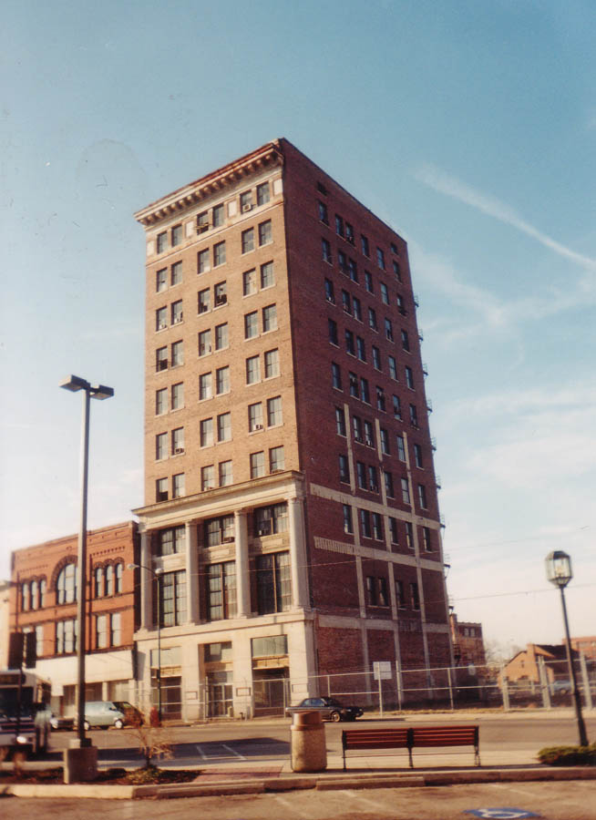
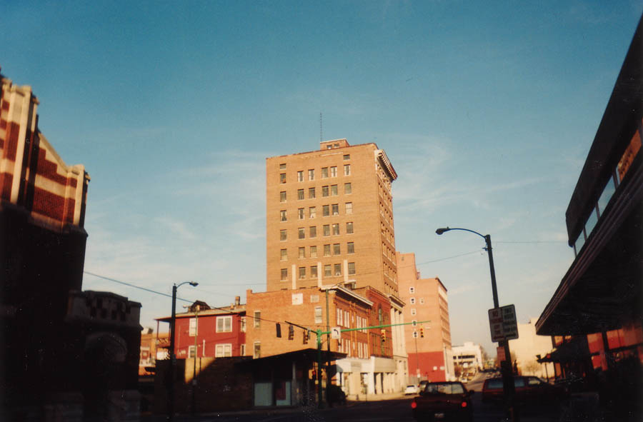
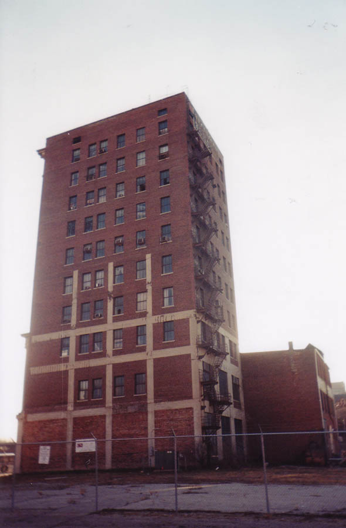
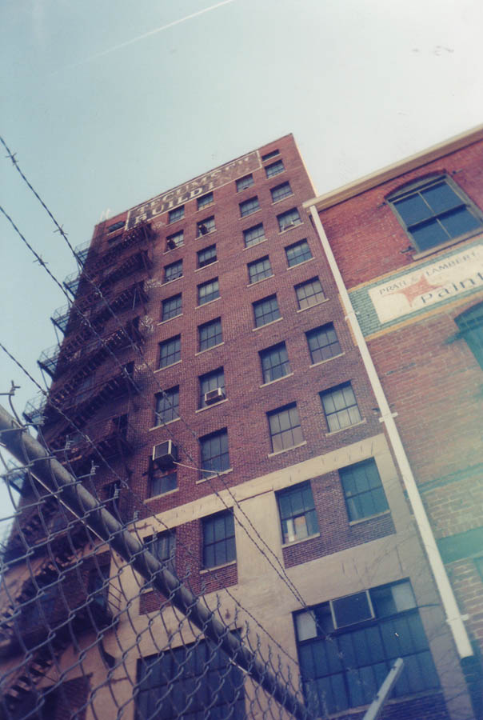

Many people don't realize that Springfield is a pretty big city; according to the last census, it has roughly 70,000 residents, which makes it the eleventh-largest city in the state of Ohio. It has bus service, movie theaters, a huge hospital, slums--and several pretty big buildings in the downtown section. The Tecumseh Building, located on High Street across from the bus depot, is one of the more prominent structures in downtown Springfield. As you may have guessed, it's abandoned.

My then-girlfriend and I first stumbled across the Tecumseh during a late-night impulse trip to Springfield in March of 2002. We decided to come back during the daytime so we could see better and not be so visible inside with our flashlights. The daytime also gave us a better look at the outside of the building, which has its name painted on the bricks high up on the back.

The Tecumseh has a chain-link fence topped with barbed wire surrounding it, but that wasn't hard to get through. What was a little scary was slipping inside in broad daylight, with a drive-through bank right behind the place. Once we were inside the fence we went in through a door. To take a look at the inside of the Tecumseh, click below.

Click To Enter The Tecumseh Building
Back
forgottenohio@yahoo.com